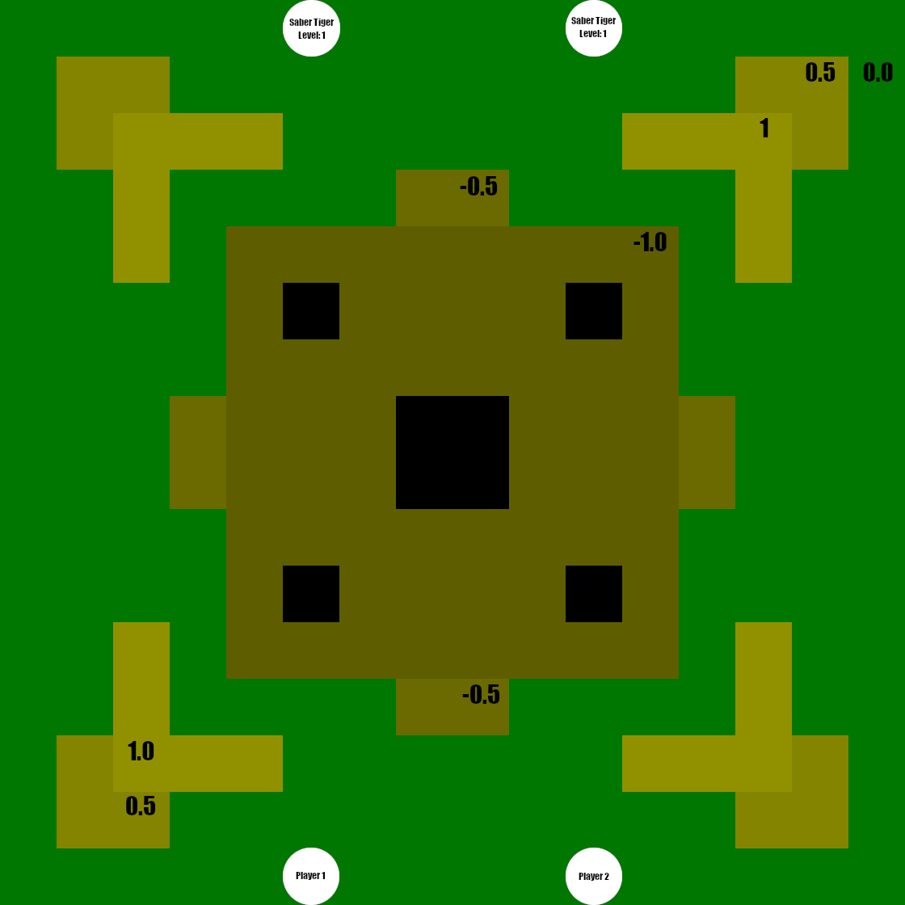

Below is a list of combat scenarios, ordered by difficulty. Each scenario contains
instructions on where enemies are placed, their levels, and other important details.
Player markers are also included, but otherwise, it's expected that you'll
include your own character along with all their equipment, VSSA scores, their
level, and anything else that belongs to them.
Forest Ruins - Step Well

An ancient step-well located within Carona Forest. It has long since dried-up, and there's
nothing in the well except unending darkness. However, this barren state hasn't stopped
local wildlife from taking-up residence. Native Pollywogs use it as their nesting spot,
while Saber Tigers use it as their hunting grounds.
Difficulty: Easy
Level: 1
Players: 3 (2 PC + DM)
Description: Face-off against two Saber Tigers, each located across the arena from yourselves.
Alternatively, you can replace the Saber Tigers with Level 1 Pollywogs.
Atlas:
-
Black: Bottomless pit.
-
Green: Grass (Height: 0).
-
Tan: Stone Block (Height: 0.5)
-
Light Tan: Stone Block (Height: 1)
-
Dark Tan: Stone Block (Height: -0.5)
-
Dark Dark Tan: Stone Block (Height: -1)